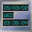
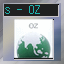
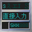

English | Japanese
RubyでDockAppを作る!
Dockアプリケーションを作るためのRuby拡張ライブラリである。
Dockアプリケーションは、いろいろ揃ってて、とっても便利なんだけど、 自分で作るのは、結構億劫。 てRubyで作れれば、楽かなぁ、と思ってライブラリを作ってみた。
% ruby extconf.rb % make # make install

DockAppの定番アプリケーションといえば、時計だろうと思って、 単純なサンプルを作ってみた。

もうちょっと複雑なサンプルとして、作ってみたもの。 Rubyのライブラリがいろいろ使えて便利だなぁと実感したかったのである。 拡張ライブラリとしてxmmsと、amazon/searchとiconvが必要。
DockAppに画像表示しても小さくて良くわからんのですが…

もともと、skkinput2からuim-skkに乗り換えたとき、 uimの入力状態を知るソフトウェアが欲しくて、探したけど(そのとき)見つかな かったんで、作ってみようと思って、DockApp作りに手を出した。
で、wmuimというのを普通にC言語 で書いて作ってみたんだが、これが結構大変だった。 で、その後、もっと簡単にDockAppを作るために、 拡張ライブラリとして、「Ruby DockApp」を作ってみたのだ。
なので、同じものを今度はRubyスクリプトとして実装してみたのがこれ。 一応、同等の機能を持つものができた。
副産物として、libuim-rubyも作った。 なんだか、とっても無駄なことをしているようだが、 気にしない。